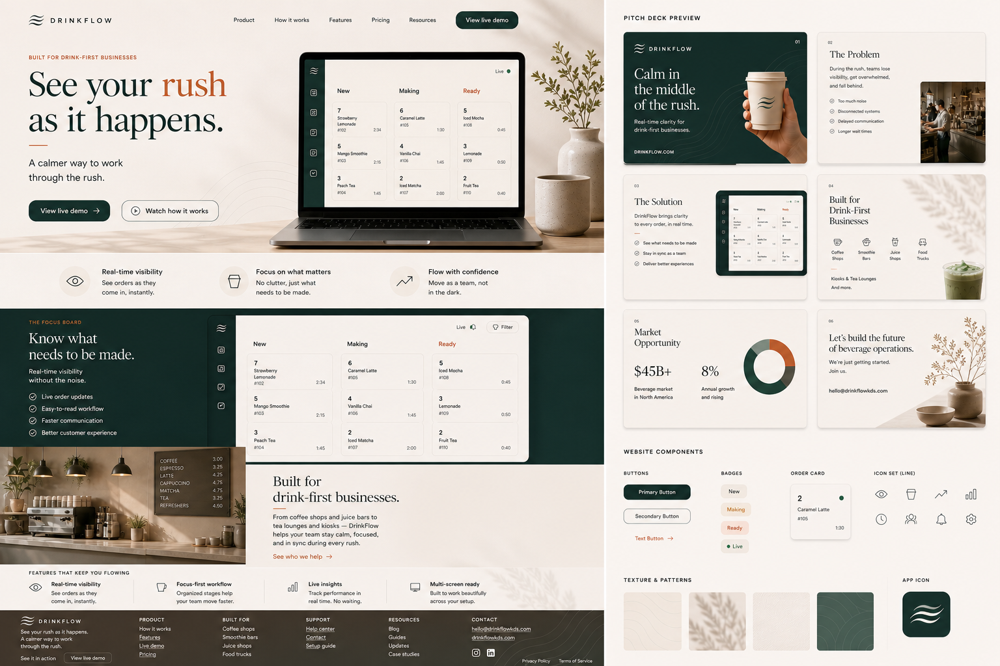

Built for drink-first businesses
See your rush as it happens.
DrinkFlow KDS gives coffee shops, smoothie bars, juice shops, carts, and food trucks a calm live view of what needs to be made, what is being made, and what is ready. It started as a custom Goldie's KDS build and is becoming a focused product for drink counters, pickup communication, and owner reports.
Focus Board
Live
New5
MeganLatte2 min
11:00 pickupAmericanoscheduled
Making3
#101Cold Brew1 min
#102Chai Latte3 min
Ready2
#098Americanonow
#099Matcha1 min
The rush reality
Drinks are not slow. The workflow is.
Screen setup
Use the screens the shop already has.
DrinkFlow runs in a browser, so a shop can use an iPad near the bar, a TV or monitor for the room, and a phone for quick owner checks. The best setup is usually one readable board for the team and one simple customer-facing board for pickup.
Product
A focused board for the drink counter.
The core board is New Tickets, Making, and Ready. Focus mode pares the work down to New Tickets and Making when staff need fewer columns. Everything else supports that rhythm without crowding the team during service.
Focus Board
Readable order cards with name or order number, drink items when needed, ticket age, stage time, dining type, and clear move controls.
Scheduled Orders
Future pickup orders stay visually separate with a clear pickup time so they do not enter the live make queue too early.
Payment Hold
Online orders that have not finished payment stay out of the make flow so staff do not waste product.
Always-On Display
Kiosk behavior helps iPads, monitors, and TV boards stay useful during long rush windows.
Receipts
Customers can receive confirmation with order details, paid status, items, and pickup time.
Menu Sync
DrinkFlow is moving toward one source of truth so online ordering, menu boards, and KDS labels stay aligned.
Drink Checkoff
Multi-drink tickets can be checked off item by item, then move to Ready when the drink work is complete.
Online Pickup
Square checkout, pickup labels, and customer-facing Orders Up screens keep online orders separate from counter noise.
Menu Availability
Out-of-stock controls are planned to flow from the menu board to online ordering so unavailable drinks cannot be sold by mistake.
Recipe Reference
Staff-facing recipe and SOP guidance can sit behind the menu so employees can check build steps without showing that content to customers.
Pickup Handoff
Ready is treated as a short handoff state, with customer-facing pickup actions and automatic clearing so orders do not sit on the board all day.
Timing Reports
Owner reports can show average drink time by range, hour, and drink name using the Making to Ready workflow instead of pickup lag.
Live case study
Built with Goldie's during real service.
Goldie's Coffee & Goods in Exira, Iowa is the first live DrinkFlow KDS shop. It sits in a rural town of roughly 700 people and sees about 89-90 drinks per day. Weekday service runs 7 AM-3 PM, Saturday service runs 8 AM-1 PM, and the product is being shaped inside that real operating rhythm.
- Scheduled orders need a clear pickup time before they enter the make queue.
- Unpaid online orders should not be made until payment is confirmed.
- Front-facing order boards need stable always-on behavior.
- Ready orders should clear quickly so the board and timing reports stay honest.
- Customer notes should reset daily while still staying archived for owners.
- Owners need day context, not just raw totals.
- Menu changes like Decaf (Americano) need to show everywhere consistently.
89-90drinks per day
7-3weekday service window
8-1Saturday service window
~700town population
Live case study
The shop notices something. The product gets sharper.
Goldie's is not a pretend demo. Opening-week feedback exposed the exact problems DrinkFlow is meant to solve: unclear make timing, noisy tickets, display reliability, online payment timing, and owner reporting that has to explain the day in plain language.
Owner portal
Understand how the day went.
DrinkFlow is designed to turn live drink workflow into plain-language owner insight: rush shape, drink mix, repeat patterns, and context like weather that may explain the day. The goal is a useful daily read, not a pile of charts the owner has to interpret alone.
Rush Summary
See when volume landed and whether the counter stayed smooth.
Drink Mix
Separate coffee, not coffee, smoothies, and retail noise.
Customer Signals
Build toward useful insights around regulars, favorites, and pickup behavior.
Weather Context
Compare the day against rain, heat, snow, wind, and other real-world conditions.
Average Drink Time
Track Making to Ready timing by day, hour, and drink name so owners can see whether the bar stayed smooth.
Exports
CSV, Excel, and branded PDF reports help owners keep a record without rebuilding the day by hand.
Supply Signals
Future prep and reorder tools can connect high-use items to low-stock notes during the day.
Customer Notes
Names, favorites, and small pickup details can become useful customer insights over time.
Simple launch pricing
Built to be affordable before it gets big.
DrinkFlow is priced for small drink counters that already use Square and want calmer workflow visibility without paying per screen. Free is planned for self-serve Square shops once OAuth onboarding is ready.
DrinkFlow Free
Planned self-serve starter for simple Square drink shops that need a basic DrinkFlow-branded board.
$0DrinkFlow Lite
Hosted dashboard, live columns, settings, and basic workflow tools without the Owner Portal or custom domain.
$2.99/mo or $25/yrDrinkFlow KDS
Everything in Lite plus owner reports, exports, custom branding, custom-domain setup, and optional display boards.
$6.99/mo or $60/yrSetup starts at $35 for Lite or $50 for KDS. Local setup is available within 100 miles for an added travel/setup fee. Pricing is independent from Square and requires the shop to already use Square for orders or payments.
A la carte growth
Add only what the counter actually needs.
Customer-facing menu boards, orders-up displays, online pickup, self-order kiosk paths, new reports, workflow changes, and themes can be added when the shop has a real reason for them.
Current build
What the live shop has taught us.
DrinkFlow is currently on v1.9.5 in the Goldie's build. The latest work is about protecting staff from avoidable mistakes during real rushes.
v1.9.5
Ready became a short handoff state.
Goldie's showed that orders sitting in Ready could skew reports and clutter customer displays. DrinkFlow now treats Ready as a brief handoff window before pickup completion.
v1.9.4
Workflow clarity during service.
Scheduled pickup visibility, paid-order protection, customer name display from notes, individual drink checkoff, always-on display behavior, Decaf (Americano) menu sync, and Saturday hours awareness.
v1.9.3
Customer ordering choices got less confusing.
Temperature and size choices moved out of drink additions, and duplicate add-on names were cleaned up so online pickup and kiosk ordering feel simpler.
v1.9.0
Online ordering moved into beta checkout.
DrinkFlow added a branded drinks-only ordering beta with Square checkout, online-order labels, and customer-facing Online versus In person status.
Next
Inventory-aware menus, staff recipes, and richer daily context.
The next useful layer is menu availability that flows into online ordering, staff-facing recipe/SOP references, plus owner portal context from weather, local conditions, supplies, and customer patterns.
Brand direction
Calm, minimal, readable, human.
DrinkFlow uses a warm cream background, deep green interface, clay accents, and large type so the product feels calm under pressure.

FAQ
For drink-first shops using Square.
DrinkFlow is not trying to replace Square. It connects around Square so the counter gets a clearer KDS, cleaner drink analytics, and owner reports that do not need a spreadsheet rescue.
What does DrinkFlow focus on?
Drink categories, average drinks per order, 2+ drink order rate, daily customer notes, branded reports, customer-facing displays, pickup handoff, online pickup, kiosk paths, and custom setup.
Does it replace Square?
No. DrinkFlow connects through Square order data, so the shop should already use Square for orders or payments.
Does it work with POS systems besides Square?
Square is the first live connector. Shopify, Clover, Lightspeed, and other workflows can be explored when a shop's order data is accessible through an API or webhook.
What happens to retail items?
Retail items can stay out of drink totals, so owner reports stay focused on beverage demand instead of merch, packaged goods, or gift noise.
Can customers see order status?
Yes. Orders Up can show what is being made and what is ready, with pickup actions that reduce yelling across the counter.
DrinkFlowKDS.com
Ready to see your rush clearly?
DrinkFlow is currently live at Goldie's and being shaped with real service feedback. If you run a drink-first business and want early access, reach out.
Ask about setup